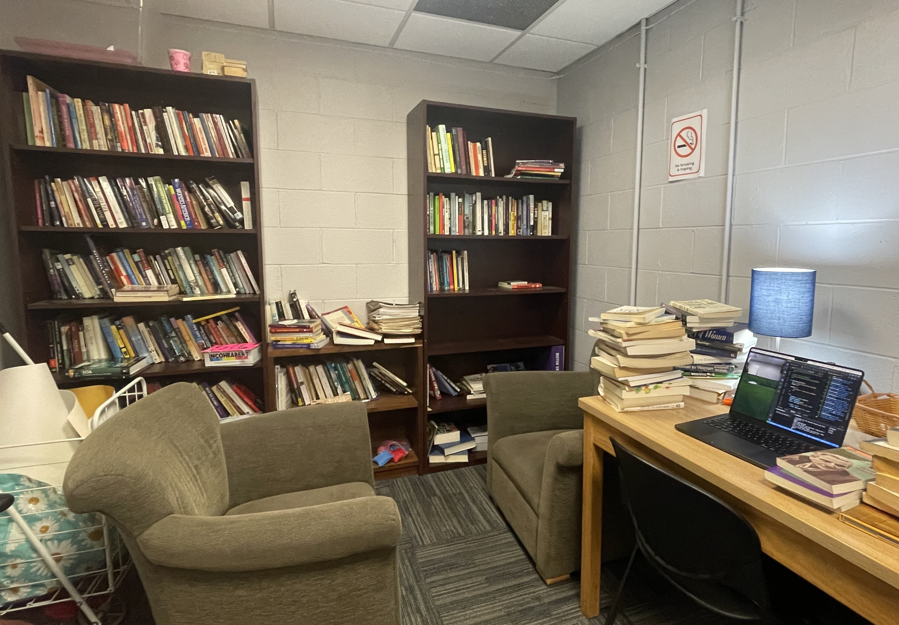

Building the CGSA Library Database
Introduction
The Center for Gender, Sexuality, and Activism (CGSA) at Boston University is an inclusive and safe space for queer students and students pursuing activism on campus. It's an entirely student-run area located in the basement of George Sherman Union (GSU), central to campus, and it is where my friends and I often spend our time together. This project meant a lot to me, as it felt as a meaningful way to "give back" to this wonderful space! I also collaborated with a close friend, Daniel, for this project.
The Problem
"The Library Room," as students call it, is much less popular than the WOMB (Wellness Of My Body) room and GARB (Gender Affirming Room for Belonging), but I think that's because it is not organized and frankly, quite dusty. There is so much history and knowledge, especially LGBTQ+ wellness guides, cultural histories, and feminist theory, that is important to visitors of the space. Having an official database will not only incentivize reading and learning, but also encourages people to keep the room tidy and the shelves well-organized.
The Solution
The first challenge was to log every book, which comes with two parts: a) what existing database/API is there and what information do we want to log and b) how do we semi-automate this process, given the large number of books we have?
The few options for an API (that are free) is either Google Books or Open Library. It seems like Open Library (ran by Internet Archives) is more straight-forward to use, plus is not dependent on either of our accounts. As for semi-automating the process, I set up a barcode scanner that uses the webcam, confirm the book to add, and then append it to a CSV, as demo'd below:
This was my first time doing any project related to the webcam, and I did run into a few issues with the barcode not reading for certain books. I found that the best way to improve this was to use a grayscale to help with barcode detection.
For books that did not have barcodes, I set up a "manual add" system, where I used the API's search query to manually enter the ISBN / title, select the best match, and then reuse the confirm append function I had before.
To be continued... the next steps are importing the database into MongoDB and creating a front-end. Stay tuned!